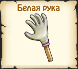
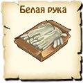

Получено: файл; исходный URL. Оригинальные байты, полученные по ссылке; идентичность архиву не подтверждена.
Белые руки
ВКонтакте; дата источника не указана- Тип
- Растения
- Версия и дата
- ВКонтакте; дата источника не указана
Дополнительные изображения

Данные по источнику · ВКонтакте · дата источника не указана
Предварительно: один источник; требует сверки. Требуется сверка.
- Цена посева
- 120 монет
- Рост
- 24 ч
- Опыт
- 1
- Продажа
- 345 монет


Данные по источнику · браузерная версия; платформа не указана · дата редакции не установлена
Предварительно: Содержимое списка: изображения и колонки могут терять смысл при извлечении текста; отдельная страница и дата не проверены. Подписи alt иногда ошибочны.. Требуется сверка.
- Текст карточки из каталога
- Растение: Рецепт с ним: Используется: Цена покупки: 120 Цена продажи: 345 Время роста: 24 часа Даёт опыта: 1 3 +3 Готовность: 3 часа Затраты: 2340 Продажа: 6000
Данные по источнику · браузерная игра, платформа не уточнена · 27.03.2015
Предварительно: Прочитана отдельная историческая статья; условия могут зависеть от версии. Независимость от других сайтов не установлена.. Требуется сверка.
- Выращивание
- 58 уровень; рассада 120 монет; 24 часа; 1 опыт за сбор грядки.
- Получение
- По статье: задания «Спасибо», «Итог», Ромашковое яйцо и рулетки футбольных флагов.
- Применение
- Вавилон, флаг Пацифиста; костёр, гора рук, чернила у поваров.
Данные по источнику · ВКонтакте, исторический фанатский справочник · дата редакции не установлена
Предварительно: Историческая фанатская таблица: цены и время могут зависеть от версии. Заявления об отсутствии применения относятся только к моменту составления; независимость источников не установлена.. Требуется сверка.
- Текст записи
- Белые руки Цена: 120 Растет: 24час. Опыт: 1 Продажа: 345 Ингридиент для:Чернила Нужен для строительства:Флаг гринписа Вавилон Нужен для производства: Огня
Данные по источнику · браузерная игра; платформа не указана · 06.05.2012 — дата публикации; дата редакции неизвестна
Предварительно: Сведения одного исторического фанатского сайта, не текущие цены или универсальные правила. Единицы и подписи-иконки могли не попасть в текст; сопоставление имён в единственном и множественном числе предварительное. Страница связана ссылками с zombi-ferma.ru, независимость не установлена.. Требуется сверка.
- Текст и числовые данные страницы
- Белая рука Уровень игрока: 58 Цена семян: 120 Цена продажи: 345 Опыт за сбор грядки: 1 Время созревания: 24 часа
Связанные сущности
нет проверенных связей — требуется сверка.